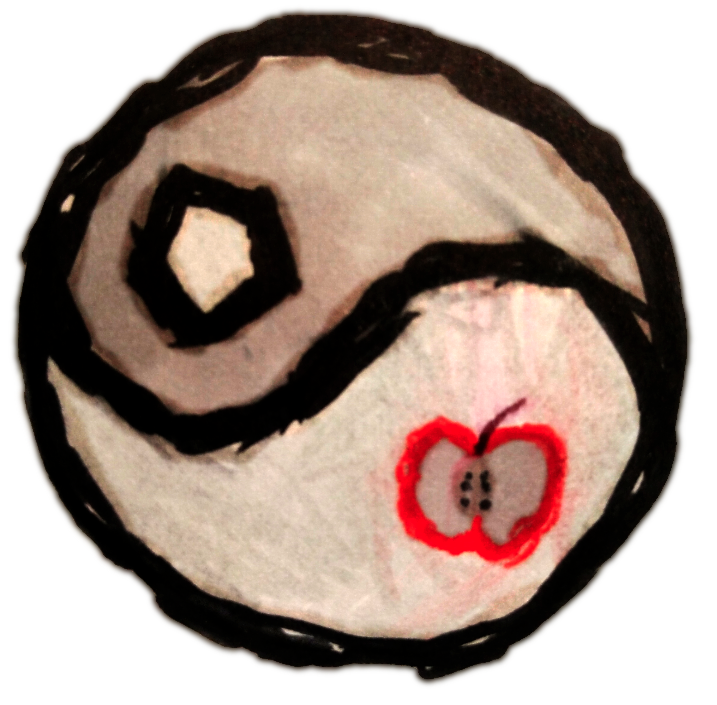
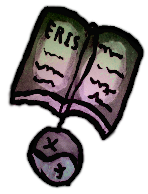
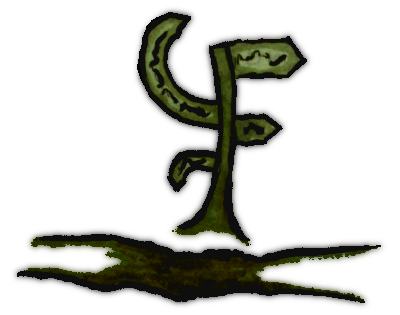

You know, sometimes I wonder why things exists and then I remember that icecream exists. Funny he? But this document is not about that, its about the thing that exist and that I called a philosotheque. Enjoy the ride!
The philosotheque was born at some time when I was doing something for some kind of reason. You know, its like everything else! But I can tell you things about it that you can also say about an infinity of things but that you may find in your brain some day later. Each philosotheque has a master. Its role is to get the fuck out and let peoples live in peace. I mean, do you really want librarians in your face when searching for a book? The creator of the philosotheque give its colors to the place but it must not give its color to the visitors. Masturbate all you want here, I won't bother. What's funny is that some peoples say that philosotheques come from empty space and are created by gods. But so is everything else.
On the topic of bloogs (blood blogs). This space is more like a collection of books inside a journal made by a wandering spirit (also called chaos surfer or crazy farmer). The books part is important since the philosotheque kind of have a need to hord knowledge as traps so the peoples stop paying attention to the *theque itself.
The soul of the philosotheque master is that of an explorer. The two X's on the philosothque logo are the starting point and end point of the master's journey. The journey is not a game, and can be a rought experience. The fact that the two X's are separated by a line means that you can't find your way to the end. But the end still exist since there are two X's. Maybe you could look at it from a distance, I don't know.
The *theque itself is a manifestation of the master inner collection of prisons. A philosotheque can have one or more master. A multi-master philosotheque will only be bigger and more colorfull. Or not.
A good philosotheque should also have a road. The road is what makes peoples able to travel, explore and communicate. The road is a repertory of other philosotheque that the master know of. In the same way of thinking, a philosotheque should have a way to contact the master so peoples can ask to have there philosotheque added to the road of an other one. In the end, there should be a network of roads travelling far and wide in the existence of humand thinking.
Someone once told me that all of this is creepy. But I was bangging on his door for half an hour singing hello america so there's that...